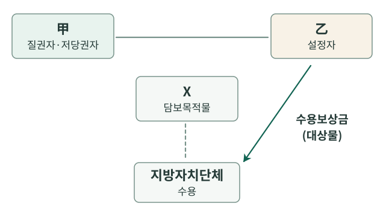

1. 개요
(1) 의의
질권이란 채권자가 그의 채권의 담보로서 채무자 또는 제3자로부터 받은 물건 또는 재산권을 채무의 변제가 있을 때까지 유치함으로써 채무의 변제를 간접적으로 강제하는 동시에(유치적 권능) 변제가 없을 때에는 그 목적물로부터 우선적으로 변제를 받는 권리이다(우선변제권능).
원칙적으로 약정담보물권이다. 다만, 예외적으로 법정질권이 인정되는 경우가 있다(가령, 제648조). 점유를 수반한다. 개념상 부동산질권도 가능하지만, 우리 민법은 인정하지 않는다.
질권은 부동산이 아닌 경우, 즉 동산과 권리에 대한 대표적인 담보제도이다. 다만, 동산질권의 경우 담보권자에게 물건을 인도하여야 하므로, 담보권설정자가 이를 직접 점유･사용하기 곤란한 문제가 있다. 이러한 이유에서 동산에 관한 질권보다는 양도담보제도나 (새로이 법률로 제도화된) 동산양도담보권이 더 많이 활용되고 있다. 따라서 현실적으로 질권은 동산보다는 채권, 주식 등을 목적으로 하는 권리질권의 형태로 주로 활용된다.
(2) 종류
적용법규에 따라 분류하면, 직접 민법 규정이 적용되는 민사질(권), 상행위로 생긴 채권을 담보하기 위해서 설정되는 상사질(권)로 분류된다. 상사질(권)의 경우 유질계약금지가 적용되지 않는다. 목적물에 따라서 동산질권과 권리질권으로 나뉜다. 목적물에 따라 동산질권과 부동산질권으로 나눌 수 있으나 부동산질권은 우리 민법에서 인정되지 않는다(제도상으로 존재한다면, 양자는 그 공시 및 실행 방법에서 차이가 발생할 것이다).
질권은 내용상 점유질과 수익질로 나눌 수 있다. 점유질은 질권자가 단순히 질물을 점유할 권리만을 가질 뿐이고, 원칙적으로 질물을 사용·수익하지 못한다. 반면 수익질은 질물의 사용·수익권까지 가진다. 우리 민법은 점유질만을 인정하고 있다.
2. 동산질권
(1) 의의
동산질권이란 채무자 또는 제3자가 제공한 동산을 점유하고 그 동산에 대하여 다른 채권자보다 자기 채권의 우선변제를 받을 권리를 의미한다(제329조).
(2) 설정
질권설정계약과 목적동산의 인도로써 성립한다(제330). 질권자는 설정자로 하여금 질물의 점유를 하게 하지 못하므로(제332조), 점유개정에 의한 설정은 금지된다. 이는 공시의 원칙을 관철하고, 질물의 유치적 효력을 확보하기 위함이다. 질권이 성립한 후에 질물을 설정자에게 반환하면 그 질권이 소멸하는지 여부에 대하여 단순히 제3자에게 대항하지 못할 뿐이라는 견해도 있으나 다수설은 질권자가 유치적 효력을 포기한 때에 질권은 소멸한다고 한다.
통상적으로 잘 활용되지는 않지만, 순차적으로 여러 개의 질권을 설정하는 것도 가능하다(제333, 355조). 이 경우 인도는 목적물반환청구권의 양도로써 한다(질권자의 점유에는 간접점유도 포함된다). 예를 들어, 창고업자 W가 보관하는 동산의 소유자 A가 우선 B를 위하여 질권을 설정하면서 W에 대한 반환청구권을 양도하는 방법(확정일자부 통지 또는 승낙이 있어야 제3자에 대항 가능)으로 질권을 설정한 다음, 다시 C를 위하여 같은 동산에 관한 질권을 설정하면서 W에 대한 반환청구권을 양도하는 방법(확정일자부 통지 또는 승낙이 있어야 제3자에 대항 가능)으로 질권을 설정할 수 있다. 하나의 목적물에 대하여 수 개의 질권이 설정되는 경우는 동산질권보다 권리질권에서 더 많이 활용된다.
(3) 목적물
질권은 양도할 수 없는 물건을 목적으로 하지 못한다(제331조). 양도성이 있어야 교환가치를 실현할 수 있고 이를 전제로 우선변제권이 실현되기 때문이다. 양도할 수 있는 물건이라도 민사집행법이나 기타의 규정에 따라 양도가 금지되는 물건에 관한 동산 입질(질권설정)은 금지된다(가령, 민사집행법 제195조). 이는 질권자에게 목적물을 유치시키는 것을 방지함으로써 권리자가 스스로 사용·수익할 수 있도록 하기 위함이다.
물상대위에 관한 법리

① 질권(저당권)의 담보물권․가치권으로서의 우선변제적 효력
(구별) 일반채권자의 지위: 물상대위할 권한이 없으며, 다만 채권압류 절차에 따른 보전조치
② 담보물의 멸실․훼손 또는 공용징수로 인해 질권자 등이 받을 금전 기타의 물건
- 목적물에 대한 차임이나 매매대금? ⇒ X (∵ 담보권 추급 가능)
- 전세권에 대한 저당권의 경우 ⇒ 전세금반환청구권으로 연장
③ 지급 또는 인도 이전에 압류 필요
- 특정성: 질권설정자의 일반채권자에 대한 이익 보장
- 민사집행법 제273조 제2항 or 제247조 1항에 따라, 직접 채권압류 및 추심･전부명령 신청 또는 배당참가
대법원 2004. 4. 16. 선고 2003다64206 판결
토지 수용으로 토지 가압류는 소멸하고 그 효력이 보상금채권으로 자동 이전되지 않는다. 종전 가압류채권자는 보상금채권을 다시 가압류하더라도 물상대위권을 행사한 저당권자에게 토지 가압류의 선순위를 주장할 수 없다.
강의안 수록 원문
대법원 2004. 4. 16. 선고 2003다64206 판결
구 토지수용법(2002. 2. 4. 법률 제6656호 공익사업을위한토지등의취득및보상에관한법률 부칙 제2조로 폐지) 제67조 제1항에 의하면, 기업자는 토지를 수용한 날에 그 소유권을 취득하고 그 토지에 관한 다른 권리는 소멸하는 것인바, 수용되는 토지에 대하여 가압류가 집행되어 있더라도 토지수용으로 기업자가 그 소유권을 원시취득하게 됨에 따라 그 토지 가압류의 효력은 소멸하는 것이고, 이 경우에 그 토지 가압류가 수용보상금채권에 당연히 전이되어 그 효력이 미치게 된다고는 할 수 없으므로, 수용 전 토지에 대한 가압류채권자가 다시 수용보상금채권에 대하여 가압류를 하였다고 하더라도, 수용 전 토지에 대하여 위 토지 가압류 이후 저당권을 취득하였다가 위 수용보상금채권에 대하여 물상대위에 따른 압류를 한 자에 대하여는, 수용 전 토지에 관하여 주장할 수 있었던 사유를 수용보상금채권에 대한 배당절차에서까지 주장할 수는 없다고 보아야 한다.
대법원 2003. 3. 28. 선고 2002다13539 판결
저당권자는 배당요구 종기까지 압류·전부명령이나 배당요구로 물상대위권을 행사해야 한다. 압류·전부명령은 제3채무자에게 송달되어야 효력이 생기므로 종기 후 송달되면 해당 배당에서 우선변제를 받을 수 없다.
강의안 수록 원문
대법원 2003. 3. 28. 선고 2002다13539 판결
[1] 민법 제370조, 제342조에 의한 저당권자의 물상대위권의 행사는 구 민사소송법(2002. 1. 26. 법률 제6626호로 전문 개정되기 전의 것) 제733조에 의하여 담보권의 존재를 증명하는 서류를 집행법원에 제출하여 채권압류 및 전부명령을 신청하거나, 구 민사소송법 제580조에 의하여 배당요구를 하는 방법에 의하여 하는 것이고, 이는 늦어도 구 민사소송법 제580조(현행 민사집행법 제247조) 제1항 각 호 소정의 배당요구의 종기까지 하여야 하는 것으로 그 이후에는 물상대위권자로서의 우선변제권을 행사할 수 없다고 하여야 할 것인바, 물상대위권자로서의 권리행사의 방법과 시한을 위와 같이 제한하는 취지는 물상대위의 목적인 채권의 특정성을 유지하여 그 효력을 보전하고 평등배당을 기대한 다른 일반 채권자의 신뢰를 보호하는 등 제3자에게 불측의 손해를 입히지 아니함과 동시에 집행절차의 안정과 신속을 꾀하고자 함에 있다.
[2] 저당권자의 물상대위권 행사로서의 압류 및 전부는 그 명령이 제3채무자에게 송달됨으로써 효력이 생기며, 물상대위권의 행사를 제한하는 취지인 '특정성의 유지'나 '제3자의 보호'는 물상대위권자의 압류 및 전부명령이 효력을 발생함으로써 비로소 달성될 수 있는 것이므로, 배당요구의 종기가 지난 후에 물상대위에 기한 채권압류 및 전부명령이 제3채무자에게 송달되었을 경우에는, 물상대위권자는 배당절차에서 우선변제를 받을 수 없다.
대법원 2010. 10. 28. 선고 2010다46756 판결
제3자가 이미 보상금채권을 압류했어도 저당권자가 우선변제를 받으려면 정해진 절차에서 물상대위권을 행사해야 한다. 이를 하지 않았다면 저당권등기만으로 우선배당을 받거나 다른 배당채권자에게 부당이득반환을 구할 수 없다.
강의안 수록 원문
대법원 2010. 10. 28. 선고 2010다46756 판결
[1] 민법 제370조, 제342조 단서가 저당권자는 물상대위권을 행사하기 위하여 저당권설정자가 받을 금전 기타 물건의 지급 또는 인도 전에 압류하여야 한다고 규정한 것은 물상대위의 목적인 채권의 특정성을 유지하여 그 효력을 보전함과 동시에 제3자에게 불측의 손해를 입히지 않으려는 데에 그 취지가 있다. 따라서 저당목적물의 변형물인 금전 기타 물건에 대하여 이미 제3자가 압류하여 그 금전 또는 물건이 특정된 이상 저당권자가 스스로 이를 압류하지 않고서도 물상대위권을 행사하여 일반 채권자보다 우선변제를 받을 수 있으나, 그 행사방법은 민사집행법 제273조에 의하여 담보권의 존재를 증명하는 서류를 집행법원에 제출하여 채권압류 및 전부명령을 신청하는 것이거나 민사집행법 제247조 제1항에 의하여 배당요구를 하는 것이므로, 이러한 물상대위권의 행사에 나아가지 아니한 채 단지 수용대상토지에 대하여 담보물권의 등기가 된 것만으로는 그 보상금으로부터 우선변제를 받을 수 없다. 그렇다면 저당권자가 물상대위권의 행사에 나아가지 아니하여 우선변제권을 상실한 이상, 다른 채권자가 그 보상금 또는 이에 관한 변제공탁금으로부터 이득을 얻었다고 하더라도 저당권자는 이를 부당이득으로서 반환청구할 수 없다.
[2] 물상대위권자로서의 권리행사 방법과 시한을 제한하는 취지가 물상대위의 목적인 채권의 특정성을 유지하여 그 효력을 보전하고 제3자에게 불측의 손해를 입히지 아니하려는 데에 있는 점 등을 고려하면, 저당권에 의하여 담보된 채권이었으나 그 저당목적물의 변형물인 금전에 대하여 물상대위권의 행사에 나아가지 아니한 이상, 그 채권을 국세징수법 제81조 제1항 제3호에 규정된 ‘압류재산에 관계되는 저당권에 의하여 담보된 채권’으로 볼 수는 없다.
④ 물상대위권이 실현되지 못한 경우
- 제3채무자 또는 물상대위 없음에 따라 배당을 받게 된 제3자에 대한 관계: 위 판례참고
- 채무자 또는 물상보증인의 담보권설정자와의 관계
대법원 2009. 5. 14. 선고 2008다17656 판결
물상대위에 필요한 압류 전에 저당물 소유자가 보상금 등을 수령하면 저당권자는 그 금전에 물상대위할 수 없다. 다만 소유자가 얻은 이익은 수령액 중 채권최고액을 한도로 한 피담보채권액 범위에서 부당이득으로 반환해야 한다.
강의안 수록 원문
대법원 2009. 5. 14. 선고 2008다17656 판결
저당권자는 저당권의 목적이 된 물건의 멸실, 훼손 또는 공용징수로 인하여 저당목적물의 소유자가 받을 저당목적물에 갈음하는 금전 기타 물건에 대하여 물상대위권을 행사할 수 있으나, 다만 그 지급 또는 인도 전에 이를 압류하여야 하며, 저당권자가 위 금전 또는 물건의 인도청구권을 압류하기 전에 저당물의 소유자가 그 인도청구권에 기하여 금전 등을 수령한 경우 저당권자는 더 이상 물상대위권을 행사할 수 없게 된다. 이 경우 저당권자는 저당권의 채권최고액 범위 내에서 저당목적물의 교환가치를 지배하고 있다가 저당권을 상실하는 손해를 입게 되는 반면에, 저당목적물의 소유자는 저당권의 채권최고액 범위 내에서 저당권자에게 저당목적물의 교환가치를 양보하여야 할 지위에 있다가 마치 그러한 저당권의 부담이 없었던 것과 같은 상태에서의 대가를 취득하게 되는 것이므로, 그 수령한 금액 가운데 저당권의 채권최고액을 한도로 하는 피담보채권액의 범위 내에서는 이득을 얻게 된다. 저당목적물 소유자가 얻은 위와 같은 이익은 저당권자의 손실로 인한 것으로서 인과관계가 있을 뿐 아니라, 공평의 관념에 위배되는 재산적 가치의 이동이 있는 경우 수익자로부터 그 이득을 되돌려받아 손실자와 재산상태의 조정을 꾀하는 부당이득제도의 목적에 비추어 보면 위와 같은 이익을 소유권자에게 종국적으로 귀속시키는 것은 저당권자에 대한 관계에서 공평의 관념에 위배되어 법률상 원인이 없다고 봄이 상당하므로, 저당목적물 소유자는 저당권자에게 이를 부당이득으로 반환할 의무가 있다.
대법원 1975. 4. 8. 선고 73다29 판결
경매 중 근저당물이 제3자의 불법행위로 멸실해 근저당권이 소멸하고 소유자가 보상을 받았다면, 근저당권자는 소유자에게 부당이득반환을 청구할 수 있다.
강의안 수록 원문
대법원 1975. 4. 8. 선고 73다29 판결
경매진행중인 근저당목적물이 제3자의 불법행위로 멸실되어 근저당권이 소멸한 경우 소유자가 불법행위자로부터 보상을 받았으면 근저당권자였던 사람은 소유자에게 부당이득 반환을 청구할 수 있다.
대법원 2009. 9. 10. 선고 2006다61536, 61543 판결
토지 가압류에는 담보물권의 물상대위 법리가 적용되지 않는다. 토지가 수용되어 가압류가 소멸하고 제3취득자가 보상금 전액을 받았더라도 이는 수용의 법정 효과여서 가압류채권자에 대한 부당이득이 아니다.
강의안 수록 원문
대법원 2009. 9. 10. 선고 2006다61536, 61543 판결
‘공익사업을 위한 토지 등의 취득 및 보상에 관한 법률’ 제45조 제1항에 의하면, 토지 수용의 경우 사업시행자는 수용의 개시일에 토지의 소유권을 취득하고 그 토지에 관한 다른 권리는 소멸하는 것인바, 수용되는 토지에 대하여 가압류가 집행되어 있더라도 토지 수용으로 사업시행자가 그 소유권을 원시취득하게 됨에 따라 그 토지 가압류의 효력은 절대적으로 소멸하는 것이고, 이 경우 법률에 특별한 규정이 없는 이상 토지에 대한 가압류가 그 수용보상금채권에 당연히 전이되어 효력이 미치게 된다거나 수용보상금채권에 대하여도 토지 가압류의 처분금지적 효력이 미친다고 볼 수는 없으며, 또 가압류는 담보물권과는 달리 목적물의 교환가치를 지배하는 권리가 아니고, 담보물권의 경우에 인정되는 물상대위의 법리가 여기에 적용된다고 볼 수도 없다. 그러므로 토지에 대하여 가압류가 집행된 후에 제3자가 그 토지의 소유권을 취득함으로써 가압류의 처분금지 효력을 받고 있던 중 그 토지가 공익사업법에 따라 수용됨으로 인하여 기존 가압류의 효력이 소멸되는 한편 제3취득자인 토지소유자는 위 가압류의 부담에서 벗어나 토지수용보상금을 온전히 지급받게 되었다고 하더라도, 이는 위 법에 따른 토지 수용의 효과일 뿐이지 이를 두고 법률상 원인 없는 부당이득이라고 할 것은 아니다.
(4) 피담보채권
질권에 의하여 담보되는 피담보채권의 종류에는 제한이 없다. 담보물권을 실행할 때 채권이 존재할 것을 최소한도로 요구하는 것이므로 조건부, 기한부 채권도 피담보채권이 될 수 있다. 불확정채권에 대하여 근질이 가능한지에 대하여 학설은 가능하다고 보고 있다. 그러나 채권최고액이 공시되지 않는다는 문제점이 남는다.
대법원 2009. 10. 15. 선고 2009다43621 판결(피담보채권이 공시되지 않는 경우)
근질권이 설정된 금전채권을 제3자가 압류해 강제집행을 시작하면, 근질권자가 그 집행 개시 사실을 안 때에 근질권의 피담보채권이 확정된다.
강의안 수록 원문
대법원 2009. 10. 15. 선고 2009다43621 판결(피담보채권이 공시되지 않는 경우)
근질권의 목적이 된 금전채권에 대하여 근질권자가 아닌 제3자의 압류로 강제집행절차가 개시된 경우, 제3채무자가 그 절차의 전부명령이나 추심명령에 따라 전부금 또는 추심금을 제3자에게 지급하거나 채권자의 경합 등을 사유로 위 금전채권의 채권액을 법원에 공탁하게 되면 그 변제의 효과로서 위 금전채권은 소멸하고 그 결과 바로 또는 그 후의 절차진행에 따라 종국적으로 근질권도 소멸하게 되므로, 근질권자는 위 강제집행절차에 참가하거나 아니면 근질권을 실행하는 방법으로 그 권리를 행사할 것이 요구된다. 이런 까닭에 위 강제집행절차가 개시된 때로부터 위와 같이 근질권이 소멸하게 되기까지의 어느 시점에서인가는 근질권의 피담보채권도 확정된다고 하지 않을 수 없다. 근질권자가 제3자의 압류 사실을 알고서도 채무자와 거래를 계속하여 추가로 발생시킨 채권까지 근질권의 피담보채권에 포함시킨다고 하면 그로 인하여 근질권자가 얻을 수 있는 실익은 별 다른 것이 없는 반면 제3자가 입게 되는 손해는 위 추가된 채권액만큼 확대되고 이는 사실상 채무자의 이익으로 귀속될 개연성이 높아 부당할 뿐 아니라, 경우에 따라서는 근질권자와 채무자가 그러한 점을 남용하여 제3자 등 다른 채권자의 채권 회수를 의도적으로 침해할 수 있는 여지도 제공하게 된다. 따라서 이러한 여러 사정을 적정·공평이란 관점에 비추어 보면, 근질권이 설정된 금전채권에 대하여 제3자의 압류로 강제집행절차가 개시된 경우 근질권의 피담보채권은 근질권자가 위와 같은 강제집행이 개시된 사실을 알게 된 때에 확정된다고 봄이 타당하다.
대법원 2025. 9. 25. 선고 2025다212005 판결(피담보채권의 채권최고액이 공시되는 경우)
근저당권에 근질권설정의 부기등기가 된 부동산에 대해 근질권자 이외의 제3자가 경매를 신청하면, 매수인이 매각대금을 지급하여 근저당권이 소멸할 때 근질권의 피담보채권도 확정된다.
강의안 수록 원문
대법원 2025. 9. 25. 선고 2025다212005 판결(피담보채권의 채권최고액이 공시되는 경우)
근저당권이 설정된 부동산에 관하여 해당 근저당권자가 아닌 제3자가 경매를 신청한 경우 근저당권의 피담보채권은 그 근저당권이 소멸하는 때, 즉 매수인이 매각대금을 지급한 때에 확정된다. 이러한 법리는 근저당권에 대한 근질권의 부기등기가 마쳐진 후 그 부동산에 관하여 해당 근질권자가 아닌 제3자의 신청에 따라 경매절차가 개시된 경우에도 마찬가지이므로, 근질권의 피담보채권은 그 근저당권이 소멸하는 때, 즉 매수인이 매각대금을 지급한 때에 확정된다고 보아야 한다.
피담보채권액의 범위에 대하여 질권은 원본, 이자, 위약금, 질권실행의 비용, 질권보존의 비용 및 채무불이행 또는 질물의 하자로 인한 손해배상의 채권을 담보한다. 그러나 다른 약정을 하는 것도 가능하다(제334조).
(5) 효력
(가) 유치적 권능
채권자는 피담보채권을 변제받을 때까지 질물을 유치할 수 있다(제335조). 이는 물권적 효력에 해당하나, 질권자는 질권자보다 우선권이 있는 채권자에게는 대항할 수 없다(제335조 단서). 선순위질권의 피담보채권자, 우선특권을 가지는 선박채권자(상법 제788조, 제777조 이하), 질권자에 우선하는 조세채권자(국세기본법 제35조, 지방세기본법 제71조 등)이 여기에 해당한다.
질권의 유치적 효력은 위와 같은 우선권리자에 의해 제한되는 경우를 제외하고는 유치권의 유치적 효력과 동일하다. 유치권의 내용이 준용되어 과실수취권을 갖고, 비용상환청구권을 행사할 수 있다(제343조).
(나) 사용수익권능
민법 제343조에 의해 민법 제324조가 준용되므로, 질권자는 사용·수익권능을 가진다. 이는 보존에 필요한 한도 내에서만 인정된다.
(다) 우선변제권능
동산질권자는 질물로부터 다른 채권자보다 먼저 자기채권의 우선변제를 받을 권리가 있다(제329조). 동일한 동산에 수 개의 질권이 설정된 경우, 그 순위는 질권설정의 선후에 의한다.
(라) 경매청구권, 간이변제충당권
질권자는 채권의 변제를 받기 위하여 질물을 경매할 수 있다(제338조 제1항). 그 절차는 민사집행법에 따라 행하여지고, 그 매도대금으로부터 권리순위에 따라 우선변제를 받는다. 그리고 잔액이 있는 때에는 질권설정자에게 반환한다. 질권자가 질물에 의하여 변제받지 못한 채권 부분에 한하여 민사집행법의 규정에 따라 집행권원을 얻어 채무자의 일반재산에 대한 강제집행을 할 수 있다(제340조 제1항).
질물에 앞서 다른 재산에 관한 배당을 실시하는 경우에는 민법 제340조 제1항의 제한은 적용되지 않는다. 질권자는 채권 전액을 가지고 배당에 참가할 수 있다(제340조 제2항 본문 참조). 다만 다른 채권자의 청구가 있는 때에는 질권자는 그 배당액을 공탁하여야 하는데(제340조 제2항 단서), 이 단서 규정은 질권자가 질물로써 충분히 채무액의 변제를 받을 수 있음에도, 질권자가 미리 배당액을 수령함으로써 다른 채권자의 이익을 해하기 때문이다.
민법 제339조는 유질계약을 금지하고 있다. 즉, 질권설정자는 채무변제기 전의 계약으로 질권자에게 변제에 갈음하여 질물의 소유권을 취득하게 하거나 법률에 정한 방법에 의하지 아니하고 질물을 처분할 것을 약정하지 못한다. 이는 궁박 상태에 있는 채무자가 폭리행위에 의해 희생되는 것을 막기 위한 것이다. 이에 위반하여 유질계약을 체결할 경우, 유질계약 자체는 무효이지만 질권계약 자체가 무효로 되는 것은 아니다. 예외적으로 변제기 이후에 하는 유질계약은 유효하다. 한편, 상사질에서는 유질계약이 가능하다(상법 제 59조).
대법원 2008. 3. 14. 선고 2007다11996 판결
상행위로 생긴 채권을 담보하는 상사질권에서는 유질계약이 허용된다. 다만 질권설정만으로 성립하지는 않으므로 별도의 명시적 또는 묵시적 유질약정이 있어야 한다.
강의안 수록 원문
대법원 2008. 3. 14. 선고 2007다11996 판결
상행위로 인하여 생긴 채권을 담보하기 위하여 설정한 질권의 경우에는 이른바 유질계약이 허용된다고 할 것이나(상법 제59조, 민법 제339조), 그렇다고 하여 모든 상사질권설정계약이 당연히 유질계약에 해당한다고 할 수는 없는 것이고, 상사질권설정계약에 있어서 유질계약의 성립을 인정하기 위하여서는 그에 관하여 별도의 명시적 또는 묵시적인 약정이 성립되어야 할 것이다.
질권자는 정당한 이유가 있는 때에는 감정인의 평가에 의하여 질물로 직접 변제에 충당할 것을 법원에 청구할 수 있다(제338조 제2항 제1문). 이를 간이변제충당권이라 한다. 질권의 우선변제권을 경매에 의해 행사하는 경우 절차가 번잡하며 비용이 많이 들기 때문에, 이러한 원칙을 비교적 가치가 적은 동산이나 공정가격이 있는 동산에 대해서까지 적용하는 것은 적절하지 못하다. 따라서 정당한 이유가 있는 경우 법원에 대해 질물로 직접 변제충당할 것을 청구할 수 있도록 한 것이다.
(6) 질권의 처분
(가) 질권의 양도
민법 제361조를 유추적용하여 피담보채권과 함께 처분하는 것이 가능하다(부종성, 수반성).
(나) 전질권
전질권이란 질권자가 채권의 담보로서 인도받아 유치하고 있던 질권을 이용하여 다시 자신의 제3자에 대한 채무를 위한 질권을 설정하는 권리이다. 민법 제336조는, 질권자가 그 권리의 범위 내에서 자기의 책임으로 질물을 전질할 수 있다고 규정함으로써 전질권을 인정하고 있다.
(a) 책임전질
책임전질이란 질권설정자의 승낙을 얻지 않고 행하는 전질을 말한다(제336조 본문). 책임전질의 법적 성질에 대해서는 해제조건부질권양도설, 질권입질설, 질물재입질설, 채권질권공동입질설이 대립한다. 질권을 피담보채권과 분리된 순수한 가치권으로 파악하여, 전질은 원질권자가 자기의 채무를 담보하기 위하여 질물 위에 다시 질권을 설정하는 것이라는 것이 질물재입질설이다. 그러나 담보물권의 부종성 때문에 채권과 분리하여 질권만을 처분하는 것은 허용될 수 없다. 가치권으로서의 독립성이 질권보다도 더 뚜렷한 저당권에서조차 분리처분이 허용되지 않고 있다. 이러한 이유에서 다수설은 채권질권공동입질설을 취하고 있다.
책임전질의 성립요건으로는 원질권자와 전질권자의 물권적 합의 및 질물의 인도가 요구된다. 이때 전질권은 원질권의 범위 내이어야 한다(제336조). 전질은 피담보채권의 입질을 포함하는 것이므로 권리질권의 설정 요건을 갖추어야 한다. 즉, 책임전질은 원질권설정자의 승낙을 요건으로 하지는 않으나, 원질권자가 채무자에게 전질 사실을 통지하거나 채무자가 이를 승낙하지 않으면, 전질로서 채무자·보증인·질권설정자 및 그 승계인에 대하여 대항하지 못한다(제337조 1항, 450조).
전질권설정자는 불가항력으로 인한 손해라도 전질을 하지 아니하였으면 그 손해를 면할 수 있었던 경우에는 그에 관한 책임을 부담한다(제336조 후문). 질권자는 질권설정자의 승낙 없이도 전질할 수 있으므로 이에 부수되는 불이익은 그 귀책사유 유무와 무관하게 질권자에게 귀속하는 것이 타당하다. 전질권자는 질물에 대해 경매권 및 간이변제충당권을 가지며, 질물의 환가금으로부터 원질권자에 우선하여 변제권을 갖는다. 민법 제353조가 유추적용되어 전질권자는 채권질권자와 같은 지위에서 질권설정자에게 직접 청구할 수 있고, 해당 청구의 급부목적물을 수령할 수도 있다.
[보론] 원질권과 전질 사이의 관련성에 대한 이해
책임전질은 원질권을 전제로 하는 관계이다.
전질권자는 자기 채권의 변제기 이외에 원질권의 피담보채권 역시 변제기에 이르러야만 전질권을 행사할 수 있다. 전질권자가 전질의 우선변제권 행사로써 만족을 얻는 경우, 원질권자의 피담보채권 역시 그 한도에서 만족을 얻게 되어 소멸한다. 원질권자는 전질의 목적인 질권을 포기할 수 없다(이로 인해 원질권자가 채권의 만족을 얻더라도, 이로써 질권소멸을 전질권자에게 주장할 수는 없다. 이에 따라 원질권의 피담보채무에 대한 보증인 등의 이해관계가 침해될 우려가 있으며, 이에 대한 입법적 대비로 전질 사실에 대한 통지, 승낙을 정해두고 있다)
(b) 승낙전질
질권자가 질물소유자의 승낙을 얻어 그 질물 위에 다시 질권을 성립시키는 것이다(제343조, 제324조 제2항). 승낙전질권은 원질권과는 전혀 별개로서 독립적으로 설정되는 것이고, 그 법적 성질은 질물의 재입질이다. 책임전질과 달리 질물소유자의 승낙을 요한다. 원질권의 범위를 초과해도 무방하다. 또한 질물에 관한 질권자의 책임이 가중되지 않는다.
(7) 침해에 대한 구제방법
동산질권은 질물을 점유할 물권적 권리이다. 동산질권에 대한 침해가 있는 경우 점유보호청구권에 의하여 보호되고, 동산질권의 침해로 손해가 발생한 경우에는 손해배상청구권이 인정된다.
질권에 대해서는 소유권에 관한 물권적청구권(제213조, 제214조)을 준용하고 있지 않다는 데에 문제가 있다. 점유보호청구권으로 충분하다는 견해와 이와는 달리 별도로 물권적 청구권을 인정해야 하고 이를 질권에 준용하는 규정을 누락한 것은 입법적 착오라는 견해가 대립한다. 해석론상으로는 점유보호청구권을 활용할 수밖에 없을 것이다.
질권을 침해한 경우 손해배상청구권이 성립한다. 이와 관련하여, 질권실행 전이나 피담보채권의 변제기 전에 질권이 멸실된 경우에도 행사할 수 있는지의 문제와 질권침해로 인한 손해배상액의 산정 시, 목적물가액을 기준으로 할 것인지 또는 피담보채권 중 미변제액을 기준으로 할 것인지의 문제 등이 있는데, 이에 관한 논의는 저당권 침해로 인한 손해배상청구권에서의 논의(328쪽 부분) 참조.
(8) 물상보증인의 구상권
타인 채무를 담보하기 위한 질권을 설정한 자가 그 채무를 변제하거나 질권의 실행으로 인하여 질물의 소유권을 잃은 때에는 보증채무에 관한 규정에 의하여 채무자에 대한 구상권이 있다(제341조).
(9) 소멸 및 물상대위
질권은 질물의 멸실, 훼손 또는 공용징수로 인하여 질권설정자가 받을 금전 기타 물건에 대하여도 이를 행사할 수 있다. 이 경우에는 그 지급 또는 인도 전에 압류하여야 한다(제342조).